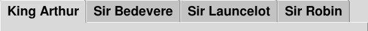

Виджет Notebook предназначен для создания области, в которой пользователь может выбирать страницы контента, нажимая на вкладки в верхней части области, как, например, здесь:

Каждый раз, когда пользователь нажимает на одну из этих вкладок, виджет отображает дочернюю панель, связанную с этой вкладкой. Как правило, каждая панель представляет собой виджет Frame, хотя панель может быть любым виджетом.
Вкладка дочерней панели, которая отображается в данный момент, называется выбранной вкладкой.
Вы будете использовать метод .add() виджета Notebook, чтобы прикрепить новую вкладку и связанное с ней содержимое. Другие методы позволяют удалять или временно скрывать вкладки.
Каждая вкладка имеет свой набор опций, которые управляют ее внешним видом и поведением. Эти параметры описаны в таблице 51, "Параметры вкладок для виджета ttk.Notebook".
Ряд методов этого виджета используют идею tabId для ссылки на одну из вкладок. Различные значения для tabId могут быть любыми из:
Целочисленные значения относятся к позиции вкладки: 0 - первая вкладка, 1 - вторая и т. д.
Вы всегда можете ссылаться на вкладку, используя сам дочерний виджет.
Строка вида "@x,y" ссылается на вкладку, которая в данный момент содержит точку (x,y) относительно виджета. Например, строка "@37,0" укажет вкладку, содержащую точку, расположенную в 37 пикселях от левого края виджета, вдоль верхнего края вкладки.
Строка "current" относится к той вкладке, которая выбрана в данный момент.
При вызове метода .index() виджета Notebook используйте строку "end" для определения текущего количества отображаемых вкладок.
Чтобы создать виджет Notebook в качестве дочернего элемента некоторого виджета parent, используйте этот конструктор:
w = ttk.Notebook(parent, option=value, ...)
Опции включают:
Таблица 50. Опции ttk.Notebook
class_ |
Имя класса виджета. Оно может быть указано при создании виджета, но не может быть изменено позже. Для объяснения классов виджетов смотрите Раздел 27, "Стандартизация внешнего вида". |
cursor |
Курсор, который будет появляться при наведении мыши на блокнот; смотрите Раздел 5.8, "Курсоры". |
height |
Высота в пикселях, которая будет выделена виджету. |
padding |
Чтобы добавить дополнительное пространство по периметру виджета, установите этот параметр в качестве размера. |
style |
Стиль, который будет использоваться при отображении виджета; см. Раздел 49, "Использование и настройка стилей ttk". |
takefocus |
По умолчанию ttk.Notebook будет включен в обход фокуса; смотрите Раздел 53, "Фокус: маршрутизация ввода с клавиатуры". Чтобы удалить виджет из обхода фокуса, используйте takefocus=False. |
width |
Ширина в пикселях, которая будет выделена виджету. |
Методы виджета ttk.Notebook включают все те, что описаны в разделе 46, "Методы, общие для всех виджетов ttk", плюс:
.add(child, **kw)
Аргумент
childпредставляет собой виджет, обычно Frame, который оборачивает содержимое одной дочерней панели. Еслиchildне является одной из дочерних панелей виджета Notebook,childдобавляется в качестве следующей доступной вкладки, а аргументы ключевых словkwопределяют параметры вкладки для новой панели. Эти параметры определены в таблице 51, "Параметры вкладок для виджета ttk.Notebook".
Если
child- это скрытая в данный момент панель, то эта вкладка снова появится на прежнем месте.
.enable_traversal()
После вызова этого метода будут работать несколько дополнительных привязок клавиш:
- <Control-Tab> выберет следующую за текущей вкладку. Если в данный момент выбрана последняя вкладка, выбор возвращается к первой вкладке.
- <Shift-Control-Tab> делает обратное: переходит на предыдущую вкладку, возвращаясь к последней, если была выбрана первая вкладка.
- Вы можете настроить определенную горячую клавишу, которая будет непосредственно выбирать вкладку. Для этого используйте параметры вкладок
textиunderline, чтобы подчеркнуть один из символов в каждой вкладке. Тогда пользователь сможет перейти на вкладку, набрав Alt-x, гдеx- подчеркнутый символ на этой вкладке.
Если у вас есть несколько виджетов Notebook в одном приложении, эти функции не будут работать корректно, пока каждый дочерний виджет панели не будет создан со своим виджетом Notebook в качестве родительского.
.forget(child)
Этот метод навсегда удаляет указанный
childиз набора вкладок виджета.
.hide(tabId)
Вкладка, идентифицированная
tabId, временно удаляется из набора видимых вкладок в Notebook. Вы можете восстановить ее, снова вызвав метод.add().
.index(tabId)
Для заданного
tabIdэтот метод возвращает числовой индекс соответствующей вкладки. Есть одно исключение: если аргументом является строка"end", метод вернет общее количество вкладок.
.insert(where, child, **kw)
Этот метод вставляет виджет
childв позицию, указаннуюwhere, используя любые аргументы ключевых слов для описания новой вкладки и панели. Параметры ключевых слов см. в таблице 51, "Параметры вкладок для виджета ttk.Notebook".
Аргумент
whereможет быть любым из:
"end"- чтобы поместить новую вкладку после всех существующих вкладок.
- Существующий дочерний виджет - чтобы вставить новый
childнепосредственно перед существующим виджетом.
.select([tabId])
Если вызвать этот метод без аргумента, он вернет имя окна виджета, вкладка которого отображается в данный момент.
Чтобы отобразить определенную панель в
Notebook, вызовите этот метод сtabIdв качестве аргумента.
.tab(tabId, option=None, **kw)
Используйте этот метод либо для установки параметров вкладки для дочерних панелей, описанных
tabId, либо для того, чтобы узнать, какие параметры установлены для этой дочерней панели. Параметры вкладок описаны в таблице 51, "Параметры вкладок для виджета ttk.Notebook".
Если вызвать метод без аргументов, он вернет словарь опций вкладок, действующих в данный момент для панели, указанной
tagId.
Чтобы узнать текущее значение определенной опции вкладки
X, вызовите этот метод с аргументом "option=X", и метод вернет значение этой опции вкладки.
Чтобы установить одну или несколько опций вкладки для дочернего элемента, описываемого
tagId, вызовите этот метод с аргументами в виде ключевых слов. Например, еслиself.nb- это Notebook, этот вызов изменит текст, отображаемый на первой вкладке:
self.nb.tab(0, text='Crunchy frog')
.tabs()
Этот метод возвращает список имен окон дочерних панелей Notebook, в порядке от первой до последней.
Вот параметры вкладок, используемые в методах .add() и .tab().
Таблица 51. Параметры вкладок для виджета ttk.Notebook
compound |
Если вы предоставили image и text для отображения на вкладке, опция compound указывает, как их отображать. Допустимые значения описывают положение изображения относительно текста и могут быть любыми из tk.BOTTOM, tk.TOP, tk.LEFT, tk.RIGHT или tk.CENTER. Например, compound=tk.LEFT будет позиционировать изображение слева от текста. |
padding |
Используйте эту опцию, чтобы добавить дополнительное пространство вокруг всех четырех сторон содержимого панели. Значением является размер. Например, padding='0.1i' добавит 0,1″ пространства вокруг каждой стороны содержимого панели. |
sticky |
Используйте эту опцию, чтобы указать, где будет располагаться содержимое панели, если оно не полностью заполняет область панели. Значения те же, что и для аргумента sticky, описанного в разделе 4.1, "Метод .grid()". Например, sticky=tk.E+tk.S будет позиционировать содержимое в правом нижнем (юго-восточном) углу. |
image |
Чтобы на вкладке появилось графическое изображение, укажите в качестве значения этого параметра изображение. Обратитесь к опции compound выше, чтобы указать относительные позиции image и text, когда вы указываете обе опции. |
text |
Текст, который будет отображаться на вкладке. |
underline |
Если эта опция имеет неотрицательное значение n, под символом в позиции n текста на вкладке появится подчеркивание. |